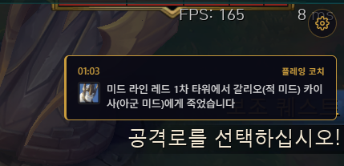

만들고 운영한 서비스
LOLPAGO는 경기 데이터와 실시간 정보를 바탕으로 코칭을 전달하는 데스크톱 앱입니다. 팀과 함께 개발하며 서비스 기획부터 클라이언트 구현과 배포까지 주도했습니다.
게임 도중에는 화면을 오래 읽기 어렵습니다. 화면 안내와 TTS 음성을 함께 제공했고 공식 API만으로 확인하기 어려운 정보는 화면 캡처와 비전 인식 및 OCR로 보완했습니다.

개발 범위
수집한 경기 데이터를 MySQL에 저장하고 서비스에서 쓰기 쉬운 형태로 가공해 자체 API로 제공했습니다. React와 Electron으로 클라이언트를 구현한 뒤 빌드와 코드 서명 및 버전 배포까지 진행했습니다.
기능별 역할을 요약한 개념도입니다. 실시간 캡처와 코칭 경로 전체를 직렬 처리한다는 의미는 아닙니다.
운영 중 해결한 문제
게임과 함께 실행되는 환경에서 성능을 확인했습니다
앱 단독 실행에서는 드러나지 않던 프레임 저하가 게임과 동시에 실행할 때 나타났습니다. Base64 기반 전송을 바이너리 방식으로 바꾸고 이미지와 이벤트 처리 구조를 개선했습니다.
개선 과정에서 확인한 게임 프레임 변화입니다. 틱당 전송량은 24% 줄었습니다.
개발 과정에서 관찰한 환경 기준의 수치입니다. 전송 방식과 처리 구조를 함께 개선한 결과이며 모든 PC의 성능을 보장하거나 전송량 감소만의 효과를 분리 측정한 결과는 아닙니다.
잘못된 안내를 화면과 음성에서 함께 막았습니다
드래곤이 등장하지 않는 칼바람 모드에서 드래곤 코칭이 나가는 문제가 있었습니다. 게임 모드와 대전 유형을 함께 확인해 차단하고 메시지 식별자로 연결된 TTS 오디오 청크도 재생하지 않도록 수정했습니다.
차단 여부를 살피다 메인 창이 자신이 요청하지 않은 코칭 오디오까지 재생하는 별개의 오류를 발견했습니다. 재생 로직까지 수정해 화면에서 메시지가 사라진 뒤에도 음성 안내가 남을 수 있는 경로를 막았습니다.
배포 이후까지 맡은 일
사용자의 실행 환경에서 발생하는 문제를 받아 원인을 좁히고 수정 버전을 배포했습니다. 클라이언트 인식 문제는 설치 경로에 의존하지 않는 방식으로 바꿨으며 변경 내용을 공지로 알렸습니다.
기능 구현과 배포를 별개의 일로 보지 않게 됐습니다. 수정한 코드뿐 아니라 화면과 음성 같은 다른 전달 경로에도 영향이 남는지 확인합니다.
LOLPAGO 서비스 사이트 ↗AX 업무에 가져갈 경험
AI 기능도 기존 서비스의 데이터와 실행 환경 안에서 동작해야 합니다. API 연결과 클라이언트 개발을 함께 맡았던 경험을 바탕으로 다른 팀과 데이터 형식과 호출 시점을 구체적으로 조율하고 배포 이후의 문제까지 살피겠습니다.